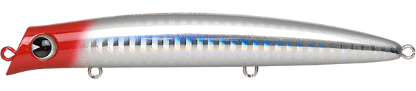
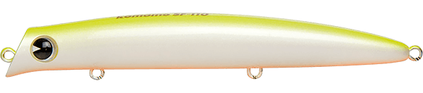
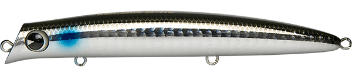
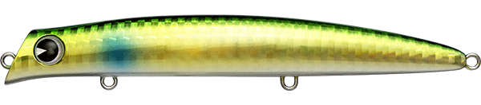

コモモSF-110
（komomo SF-110）
コモモSF-110はima（アイマ）のシャローランナーです。
コモモシリーズならではのスリムシェイプに、抑えめのアクションでナチュラルにアピールする110mmモデル。着水音が小さくなるよう着水姿勢にもこだわり、タングステンウェイトで飛距離も安定しています。干潮時のアマモ帯やシートパイルまわりなど、シャローのピンスポット攻略に向いています。

画像出典:ima公式HP
スペック
- メーカー
- ima（アイマ）
- タイプ
- フローティング（シャローランナー）
- 全長
- 110mm
- 自重
- 12g
- レンジ
- 0〜50cm
- フック
- #8
- リング
- #2
- アクション
- ローリング＋ウォブリング
- ターゲット
- シーバス
- 価格
- 2,420円
▼今すぐチェック

コモモSF-110の特徴
スリムなシルエットと抑えめのアクションで、シャローをナチュラルに攻める110mm
-
抑えめのアクションでナチュラルに誘う
コモモらしいスリムシェイプに、抑えめのローリング＋ウォブリング。スレた魚にも違和感を与えにくい、ナチュラルなアピールが持ち味です。
-
着水音が小さい
着水時の姿勢にこだわり、着水音がより小さくなるように設計。浅い場所で魚を驚かせにくく、ピンスポットへ静かに入れられます。
-
タングステンで飛距離が安定
タングステンウェイトを搭載し、110mm・12gでも飛距離が安定。狙ったピンスポットへ正確に届けられます。
コモモSF-110の使い方
基本はスローのただ巻き。水面直下〜50cmを、ナチュラルなアクションでゆっくり引きます。
ダウンクロスに投げても動きすぎないので、河川で流れに乗せて送り込む使い方にも向いています。ボイルが出ているときは、少し速めに巻いて反応を見るのもおすすめです。
コモモSF-110の得意な状況
干潮時のアマモ帯やシートパイルまわりなどのシャロー、港湾・干潟・河口・河川。コモモSF-125ではベイトとサイズが合わないときや、より繊細に攻めたいときに向いています。
ワンポイント
ベイトが大きいときや飛距離がもっと欲しいときはコモモSF-125へ。SF-125で出きらないときに110へサイズを落とすと、もう1本を引き出せることがあります。
コモモシリーズの使い分け
| モデル | 全長／自重 | 得意な場面 |
|---|---|---|
| コモモSF-110 | 110mm／12g | レンジ0〜50cm。小さめのベイトや繊細に攻めたいときに（本記事のモデル） |
| コモモSF-125 | 125mm／18g | レンジ5〜50cm。シリーズの基準となるシャローランナー |
| コモモ125カウンター | 125mm／22g | レンジ30〜60cm。アクションを抑えた海水サスペンド |
| コモモSF-155 | 155mm／25g | レンジ5〜50cm。シリーズ最大のシルエットで大型ベイトに |
| コモモII | 110mm／15g | レンジ0〜20cm。水面直下をスネーキングで強くかき回す |
コモモは、ナチュラルに泳ぐ「SF」、アクションを抑えた「カウンター」、水面直下を強く誘う「II」で性格が分かれます。ベイトの大きさでサイズを、流れの強さやベイトの元気さでタイプを選ぶのが基本です。
人気カラー
公式ラインナップから4色を紹介します（カラー名は公式の表記のまま）。

レッドヘッド定番のレッドヘッド。濁りやナイトゲームでの基準カラーに。

チャートバックパールチャートの背中で視認性が高いカラー。濁りやローライトに。

ボラボラを意識したナチュラルカラー。イナッコパターンに。

ゴールドボラゴールド系のボラカラー。日中や濁り気味のときにフラッシングで見せたいときに。
画像出典:ima公式HP
コモモSF-110に似ているルアー
-
 コモモSF-125
ima
詳細はこちら＞
コモモSF-125
ima
詳細はこちら＞
全長125mm・自重18gの同シリーズ。ベイトが大きいときや、もっと飛距離が欲しいときに。
-
 アイザー100F
ブルーブルー
詳細はこちら＞
アイザー100F
ブルーブルー
詳細はこちら＞
全長100mm・自重13.5gのシャローランナー。同じくらいのサイズで、レンジ5〜20cmの浅いところを引きたいときに。
-
 カゲロウ100F
メガバス
詳細はこちら＞
カゲロウ100F
メガバス
詳細はこちら＞
全長100mm・自重12gのシャローランナー。同じ重さで、揺らぎ系のアクションで見せたいときに。